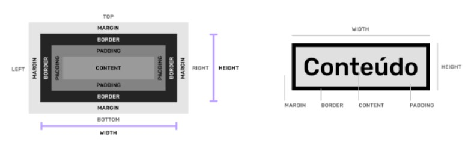

Início.
Box Model
Caixas:
Uma interface web é composta de diversas caixas que organizam o conteúdo.
Box Model
- Content (conteúdo):
- Define a largura inicial da caixa (salvo elementos de bloco).
- Padding (preenchimento):
- Separa o conteúdo das bordas da caixa. É a margem interna.
- Border (borda):
- Define bordas para a caixa.
- Margin (margem):
- Define a distância entre uma caixa e outra.
- Width (largura):
- A largura total da caixa, por padrão é o somatório do conteúdo + padding (left/right) + border (left/right).
- Height (altura):
- A largura total da caixa, por padrão é o somatório do conteúdo + padding (top/bottom) + border (top/bottom).

Pixel
- Unidade de referência:
- É a unidade de referência da Web, pois as telas são desenvolvidas em pixels.
- Monitores:
- Um monitor de: 3840 (largura em px) x 2160 (altura em px) = 8.294.400.
- px em CSS:
- No CSS o pixel (px) é uma unidade de referência e não representa 1 pixel exato do seu dispositivo (é adaptável em relação à densidade da tela), pois a tela de um smartphone pode conter mais pixels que a tela de um desktop.
div:
A <div> é um elemento de bloco block genérico que serve para auxiliar no posicionamento dos elementos/conteúdo na tela.
Existem também elementos semânticos como main, section, nav e outros que veremos em outras aulas.
Praticando
Elemento div apenas com background
width: 140px;
width: 140px; e height: 80px;
width: 140px;
height: 80px;
padding: 20px;
Ao ter adicionado: width: 140px; e posteriormente height: 80px; , o padding: 20px; irá somar:
- width: 140px+20px(do meio para esquerda)+20px(do meio para a direita)=180px de width.
- height: 80px+20px(do meio para baixo)+20px(do meio para cima)=120px de height.
width: 140px;
height: 80px;
padding: 20px;
border: 10px;
Ao ter adicionado: width: 140px;/ height: 80px; / padding: 20px;/ border:10px; irá somar:
- width: 180px+10px(do meio para esquerda)+10px(do meio para a direita)=200px de width.
- height: 120px+10px(do meio para baixo)+10px(do meio para cima)=140px de height.
width: 140px;
height: 80px;
padding: 20px;
border: 10px;
margin: 30px;
O fato do margin funcionar na parte exterior, ele não influenciará no tamanho da box.
Ferramentas para visualizar a medida de pixels e como usá-las:
Tutorial de como usar a extensão VisBug.
Download: Clique.